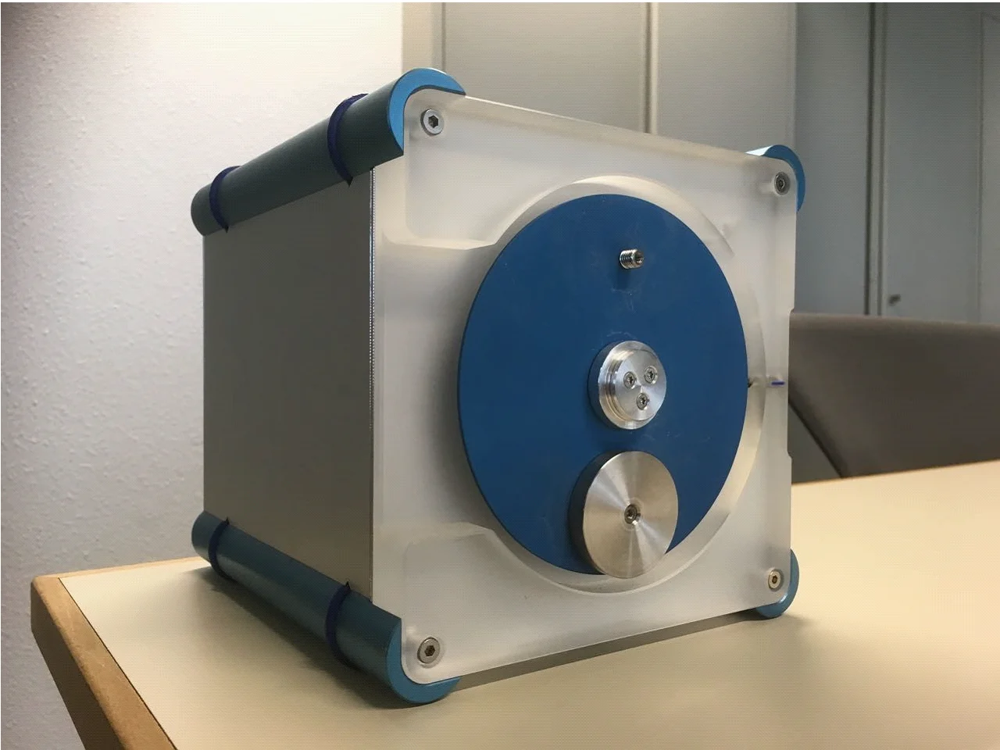
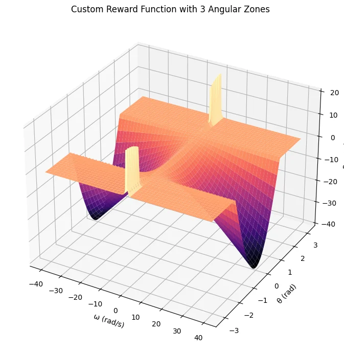
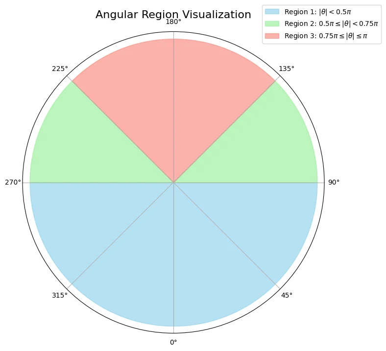
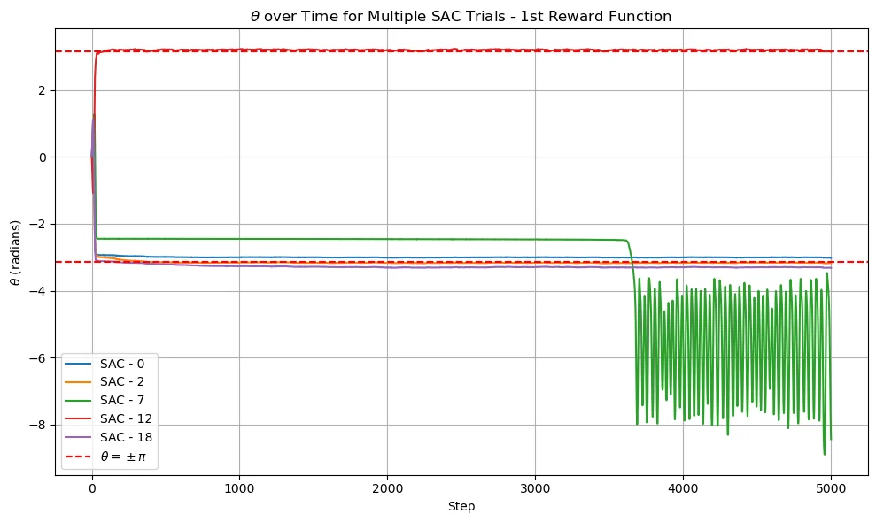
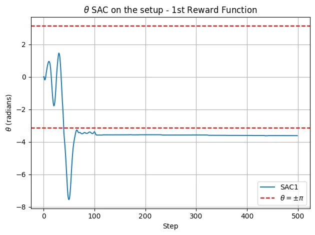
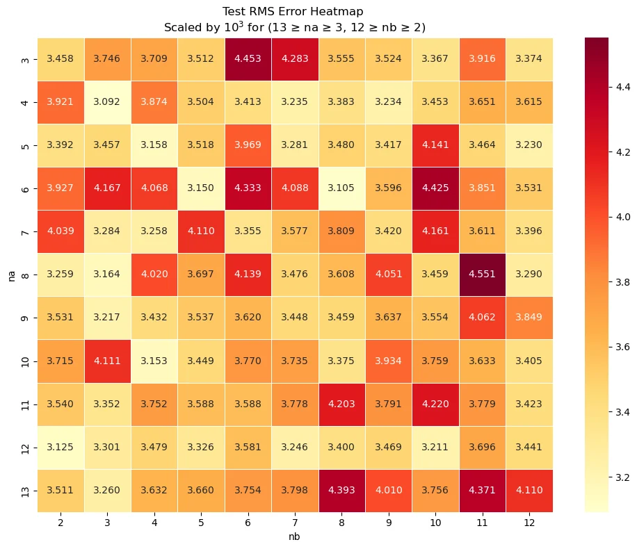
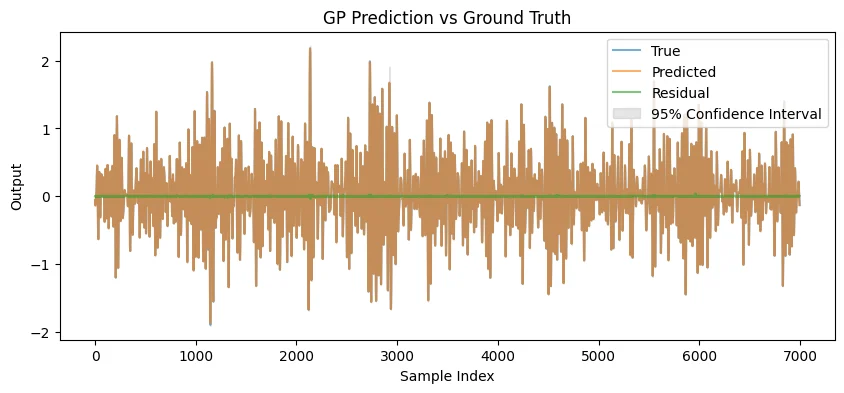

Learning the physics of a real, pendulum-like machine from noisy data alone, then teaching an agent to swing it upright and keep it there.



An unbalanced disk behaves like an inverted pendulum: unstable, nonlinear, and affected by friction.
Instead of deriving its equations, we let machine learning learn its dynamics and then learn to control it.



